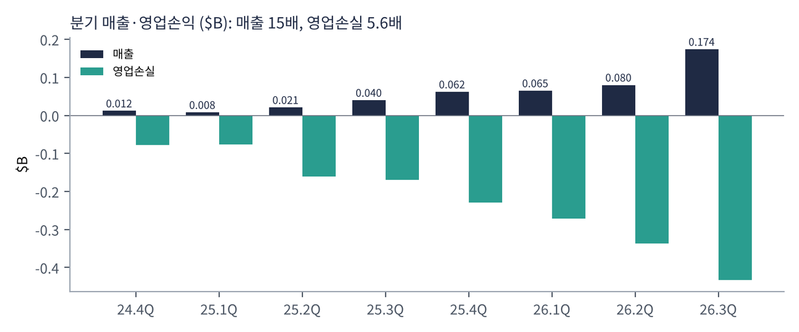
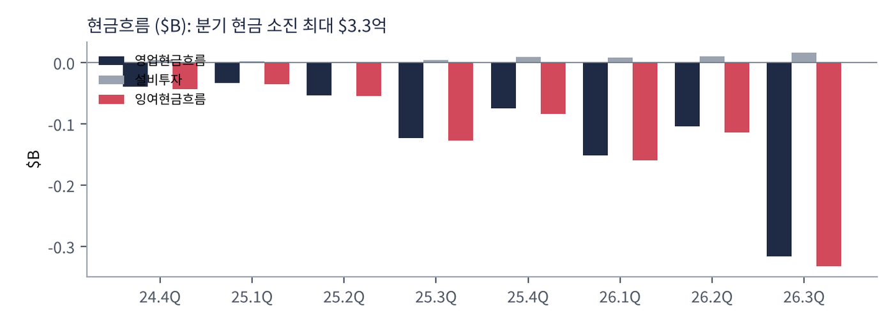
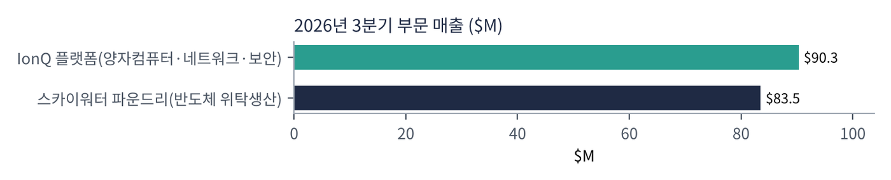
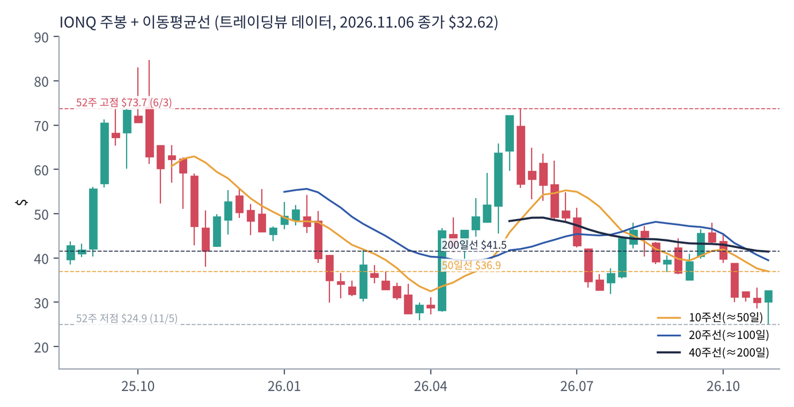
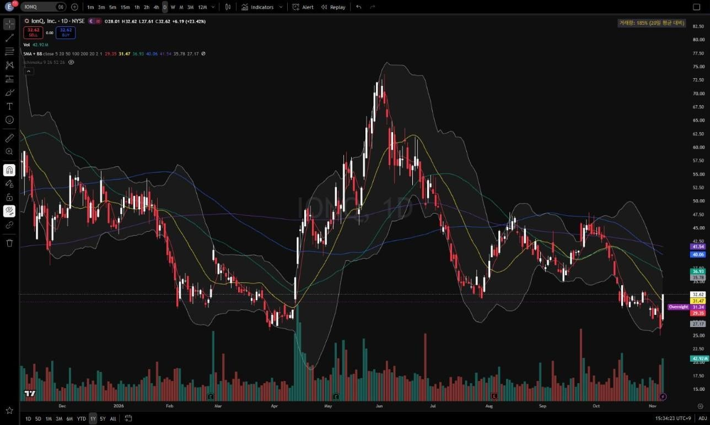
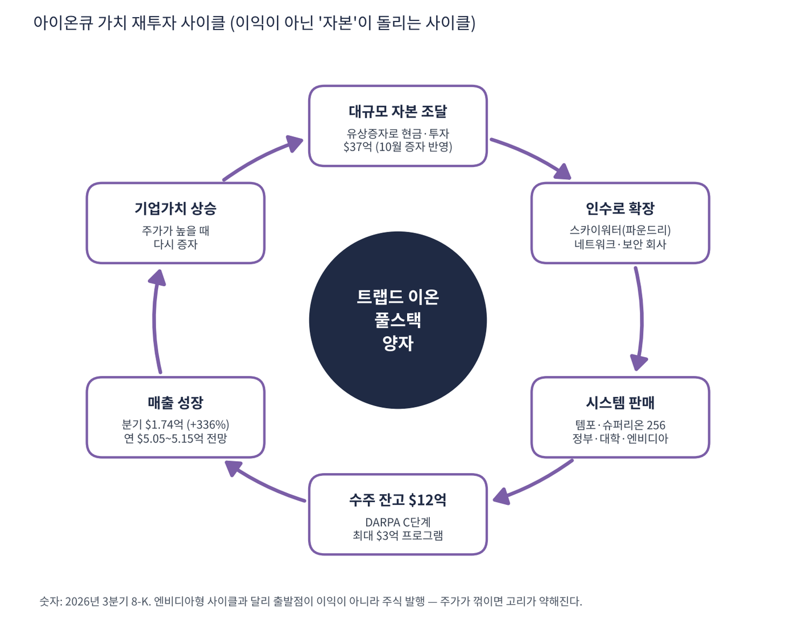

아이온큐는 '트랩드 이온(갇힌 이온)' 방식의 양자컴퓨터 회사다. 전기장으로 원자(이온)를 진공 속에 띄워 놓고 레이저로 조작해 계산하는 방식으로, 큐비트 품질(오류율)이 높은 것이 장점이다. 2025년부터 인수를 거듭하며 양자컴퓨팅 + 양자 네트워크 + 양자 센싱(원자시계) + 양자 보안 + 반도체 파운드리(스카이워터)를 모두 가진 '수직 통합 양자 기업'으로 변신했다.
| 항목 | 내용 |
|---|---|
| 종목 | IonQ, Inc. (IONQ) · NYSE · 2015년 설립 · 본사 메릴랜드주 칼리지파크 |
| 시가총액 | 약 $140억 · 적자(PER 없음) · P/S 36.8배(TTM, SEC 기준) (트레이딩뷰, 11/6 종가 $32.62) |
| 최근 분기(26.3Q) | 매출 $1.738억(+336%, 6분기 연속 사상 최대), 영업손실 $4.33억 |
| 2026년 가이던스 | 매출 $5.05~5.15억으로 상향, 수주 잔고 $12억 |
| 현금 | 현금·투자자산 $37억(9/30 기준 + 10/16 유상증자 반영, 회사 발표) |
| 직책 | 인물 | 역할·특징 |
|---|---|---|
| 회장 겸 CEO | 니콜로 데 마시 | 2025년 CEO 취임. 게임 회사 글루모바일 CEO, 스팩(dMY) 창업자 출신 — 기술자가 아닌 '딜메이커' |
| 경영 방식 | M&A 중심 | 옥스퍼드 아이오닉스, ID 퀀티크, 라이트싱크, 카펠라, 벡터 아토믹, 스카이워터, 엘리시티 등 연쇄 인수 |
경영 스타일: '자본으로 시간을 산다'. 데 마시 CEO의 3분기 코멘트 요지는 "6분기 연속 사상 최대 실적이자 회사 역사상 최고의 분기다. DARPA 양자 벤치마킹 C단계에 진출한 유일한 트랩드 이온 회사이고, 엔비디아가 슈퍼리온 256을 자사 가속 양자 연구센터의 첫 온프레미스 양자컴퓨터로 도입한다. 아이온큐는 컴퓨팅·네트워크·센싱·보안을 아우르는 최초의 수직 통합 양자 기업"이다. 주가가 높을 때 대규모 유상증자로 현금을 쌓고, 그 현금으로 회사를 사서 매출과 기술을 동시에 늘리는 방식이다. 성장 속도는 빠르지만 주주 지분 희석과 영업손실 확대가 대가다.
옥스퍼드 아이오닉스 인수로 레이저 대신 칩 위의 전자 신호로 이온을 제어하는 기술을 확보 — 반도체 공정으로 대량 생산이 가능해진다는 주장. 스카이워터(미국 파운드리) 인수는 이 칩을 직접 만들기 위한 것.
데이터센터에 들어가 GPU 슈퍼컴퓨터와 연결되는 양자컴퓨터, 그리고 양자 네트워크로 연결된 분산 양자컴퓨팅. 양자 보안(PQC·QKD)으로 당장 돈이 되는 시장도 함께 노린다.
| 분기 | 매출 | 영업손익 | 영업이익률 | 순이익(GAAP) | EPS(희석) | 영업현금 | 설비투자 | FCF | 특이 사항 |
|---|---|---|---|---|---|---|---|---|---|
| 24.4Q | $12M | -$78M | -650% | -$202M | -0.95* | -$39M | $4M | -$43M | |
| 25.1Q | $8M | -$76M | -950% | -$32M | -0.14 | -$33M | $2M | -$35M | |
| 25.2Q | $21M | -$161M | -767% | -$177M | -0.70 | -$53M | $1M | -$54M | |
| 25.3Q | $40M | -$169M | -422% | -$1,055M | -3.58 | -$123M | $4M | -$127M | |
| 25.4Q | $62M | -$229M | -369% | $754M | 2.60* | -$75M | $9M | -$84M | |
| 26.1Q | $65M | -$272M | -418% | $805M | 2.07 | -$151M | $8M | -$159M | |
| 26.2Q | $80M | -$337M | -421% | -$1,868M | -5.08 | -$104M | $10M | -$114M | |
| 26.3Q | $174M | -$433M | -249% | $564M | 1.35 | -$316M | $16M | -$332M | 스카이워터 매출 $83.5M 첫 반영 |
EPS는 희석 주당순이익(GAAP, SEC 제출 자료 기준)이다. *는 4분기를 '연간 EPS − 1~3분기 합'으로 계산한 근사치라 실제 발표값과 다를 수 있다.


흐름 요약: 2년간 분기 매출 $12M → $174M(15배), 그러나 영업손실도 $78M → $433M(5.6배)로 커졌다. 3분기 매출 중 $83.5M은 새로 인수한 스카이워터(일반 반도체 위탁생산)이고, 양자 본업(IonQ 플랫폼)은 $90.3M(+127%)이다. GAAP 순이익은 의미가 없다: 워런트·파생상품 평가손익 때문에 분기마다 +$8억에서 -$19억까지 출렁인다(26.2Q -$18.7억, 26.3Q +$5.6억). 실체는 영업손실과 현금 소진이다.
| 부문·사업 | 돈을 버는 방식 | 26.3Q 매출 | 성장 |
|---|---|---|---|
| IonQ 플랫폼 | 양자컴퓨터 판매·설치(템포·슈퍼리온), 클라우드 이용료, 양자 네트워크·센싱·보안 계약 | $90.3M | +127% |
| 스카이워터 파운드리 | 미국 내 반도체 위탁생산(국방·항공우주·일반 고객) + 양자 기업 칩 생산 | $83.5M | 인수로 신규 |

| 3분기 주요 계약 | 금액 |
|---|---|
| SDT — 슈퍼리온 256 + 양자 메모리 플랫폼 | $33M |
| DARPA 원자시계 25대 (옵션 100대 $30M 추가) | $28M |
| 플로리다 국제대학교 — 슈퍼리온 256 | $25M |
| 콩그루이티360 — 양자 보안(PQC·QKD) | $8.2M |
| 공군연구소 양자 네트워크 후속 | $7.5M |
매출은 '정부·대학·연구소에 시스템을 통째로 파는' 구조다. 건당 $2,500만~3,300만 규모 계약이 분기 매출을 좌우하므로 분기 실적이 들쭉날쭉할 수 있다. 수주 잔고 $12억은 2026년 매출 가이던스의 2.4배로 향후 매출의 바닥을 받쳐 준다.
데 마시 CEO의 표현대로 "양자 생태계를 만드는 최초의 수직 통합 양자 기술 회사"가 목표다. 엔비디아가 GPU 칩부터 소프트웨어(CUDA)·시스템·네트워크까지 다 하듯, 양자에서 그 역할을 하겠다는 것이다.
| 축 | 내용 |
|---|---|
| 컴퓨팅 | 템포 → 슈퍼리온 256 → 칩 기반 대규모 시스템. 데이터센터·GPU와 연결 |
| 제조 | 스카이워터로 양자 칩 자체 생산 + 다른 양자 기업 칩도 위탁생산(디웨이브·큐랩 고객) |
| 네트워크·센싱 | 양자 네트워크, 원자시계(DARPA 계약) |
| 보안 | 양자 내성 암호(PQC)·양자 키 분배(QKD) + 엘리시티(제로트러스트) |
| 정부 | DARPA 벤치마킹 C단계(최대 $3억), 국방·연구 계약 |


위: 트레이딩뷰 주봉 데이터로 재구성. 아래: 트레이딩뷰 공개 차트 일봉 캡처(작도 숨김).
| 이동평균 | 값 | 종가 대비 | 해석 |
|---|---|---|---|
| 5일선 | $29.35 | +11.1% | 11/6 +23% 급반등으로 회복 |
| 20일선 | $31.47 | +3.7% | 바로 위 저항 |
| 50일선 | $36.93 | -11.7% | |
| 100일선 | $40.06 | -18.6% | |
| 200일선 | $41.54 | -21.5% | 6월 이후 하향, 27% 위 |
2025년 10월 $80대 → 2026년 6월 $73.65 → 11/5 $24.92(52주 최저)까지 하락. 11/6 금요일 양자주 전반이 12~30% 급등하며 +23.4%로 $32.62 마감했다. 200 > 100 > 50 > 20일선의 완전 역배열이라 하루 반등만으로 추세가 바뀌었다고 보기 어렵다.
| 규칙 | 기준 | 현재 값 | 신호 |
|---|---|---|---|
| 장기 추세 필터 | 종가 vs 200일선 | $32.62 < $41.54 | 매도 |
| 중장기 교차 | 50일선 vs 200일선 | $36.93 < $41.54 | 매도 |
| 단기 교차 | 20일선 vs 50일선 | $31.47 < $36.93 | 매도 |
| 돈키언 채널 | 55일 고가 $47.91 / 저가 $24.92 | 중간값 $36.41 아래 | 매도 |
| 1개월 모멘텀 | 21거래일 수익률 | -17.3% (기준 $39.45) | 매도 |
| 3개월 모멘텀 | 63거래일 수익률 | -23.3% (기준 $42.53) | 매도 |
| 6개월 모멘텀 | 126거래일 수익률 | -33.8% (기준 $49.24) | 매도 |
| 12개월 모멘텀 | 252거래일 수익률 | -41.1% (기준 $55.41) | 매도 |
| 종합 (8개 평균) | -1.00 | 강한 매도 |
해석: 8개 신호 모두 매도(-1.00). 7개 회사 중 유일한 '강한 매도' 상태다. 14일 ATR $2.47 (7.6%)로 하루 7~8% 움직임이 일상이다. CTA 관점에서는 반등을 '매수 기회'가 아니라 '하락 추세 속 되돌림'으로 본다.
| 가격 | 무엇이 바뀌나 | 의미 |
|---|---|---|
| $36.4 ~ 36.9 | 돈키언 중간값 + 50일선 | 점수 -0.75 → -0.50 |
| $39.5 | 1개월 기준가 | 점수 -0.25 |
| $41.5 | 200일선 | 장기 추세 회복 — 최소 조건 |
| $24.9 | 52주 저점 | 이탈 시 추가 하락 |
기본 대응은 관망이다. CTA -1.00 + 적자 + 런웨이 2~3년 조합에서 추세 추종 매매는 매수 근거가 없다. 공격적 투자자라면 52주 저점($24.9) 위에서 소량, 손절 $24, 목표 50일선($36.9)·200일선($41.5). 200일선을 회복해야 '추세 전환'으로 볼 수 있다. 다음 실적은 약 114일 뒤(2027년 2월 말 전후).
| 악재 요인 | 내용 | 강도 |
|---|---|---|
| 지분 희석 | 연쇄 유상증자·인수 대가 주식 발행. 주가가 낮을수록 희석 비율 상승 | 높음 |
| 적자 확대 | 분기 영업손실 $4.3억, 소진 속도 가속. 런웨이 약 2.5~3년 | 높음 |
| 기술 경쟁 | IBM·구글(초전도), 퀀티뉴엄(트랩드 이온), 중성원자 방식 등. 어떤 방식이 이길지 미정 | 중간 |
| 인수 통합 | 7개 이상 인수 회사의 통합 실패 시 영업권 손상 | 중간 |
| 매출 질 | 매출 절반이 저마진 파운드리. 정부·대학 계약 의존 → 예산 변화에 민감 | 중간 |
| 테마 변동성 | 양자주 전체가 뉴스에 따라 하루 ±20~30% 동반 등락 | 참고 |
| 티커 | 회사 | 시가총액 | PER(TTM) | PEG | P/S | EPS 성장(YoY) |
|---|---|---|---|---|---|---|
| IONQ | 아이온큐 | $14B | 적자 | – | 42.02배 | – |
| RGTI | 리게티 컴퓨팅 | $4B | 적자 | – | 266.00배 | -17% |
| QUBT | 퀀텀컴퓨팅 | $1B | 적자 | – | 145.00배 | – |
| IBM | IBM(양자 사업 보유) | $232B | 20.9배 | 0.54 | 3.45배 | +40% |
아이온큐 P/S 42.0배는 트레이딩뷰 표시값(지난 회계연도 매출 기준). SEC TTM 기준은 36.8배. 디웨이브(QBTS)는 스캐너 데이터가 불완전해 제외(종가 약 $10.68).
비교 결론: 순수 양자 기업은 모두 적자라 PER 비교 자체가 불가능하다. P/S로 보면 아이온큐(37~42배)가 리게티(266배)·퀀텀컴퓨팅(145배)보다 훨씬 '덜 비싸다'. 양자 사업을 가진 흑자 대기업 IBM은 PER 20.9배, PEG 0.54로 투자 적격 구간이다. 양자 테마에 PEG 기준을 적용하고 싶다면 IBM이 유일한 선택지이고, 아이온큐는 '순수 양자 중 가장 매출이 큰 회사'라는 상대적 장점만 있다.
아이온큐는 적자 기업이다. 따라서 이 항목이 가장 중요하다. 핵심 질문은 '지금 가진 현금으로 추가 증자 없이 몇 년 버틸 수 있나'다.
| 기준 | 금액 | 출처 | 비고 |
|---|---|---|---|
| 현금 + 단기투자 (9/30) | 약 $10억 | SEC 10-Q 재무상태표 ($209M + $788M) | 가장 보수적 |
| 현금·투자자산 전체 (9/30) | 약 $21억 | 트레이딩뷰 $21.19억 | 장기 투자자산 포함으로 추정 |
| 10/16 유상증자 반영 (회사 발표) | 약 $37억 | 3분기 실적 발표문 | 증자로 약 $16억 추가 추정 |
9/30 현금+단기투자가 2분기 말($21.2억)보다 크게 줄어든 것은 스카이워터 등 인수 대금 지급 영향으로 보인다(분기 영업 소진 $3.3억보다 감소 폭이 큼).
| 기준 | 연간 소진액 | 계산 |
|---|---|---|
| 최근 4분기 FCF | 약 $6.9억 | 영업현금 -$6.46억 − 설비투자 $0.43억 |
| 3분기 연율화 | 약 $13.3억 | 3분기 FCF -$3.32억 × 4 (영업손실 확대 추세 반영) |
| 영업손실 기준 | 약 $12.7억 | 최근 4분기 영업손실 합계(비현금 비용 포함) |
| 현금 \ 소진 | 연 $6.9억 (TTM) | 연 $13.3억 (3분기 속도) |
|---|---|---|
| $10억 (보수적) | 1.4년 | 0.8년 |
| $21억 (9/30 전체) | 3.1년 | 1.6년 |
| $37억 (증자 반영) | 5.4년 | 2.8년 |
결론: 현실적인 런웨이는 약 2.5~3년(2029년 전후). 10월 증자 덕분에 당장 자금 위기는 없다. 하지만 소진 속도가 분기마다 빨라지고 있고(분기 FCF -$0.4억 → -$3.3억), 인수까지 고려하면 회사는 1~2년 안에 다시 자본시장을 찾을 가능성이 높다. 아이온큐의 진짜 런웨이는 현금이 아니라 '주가'다. 주가가 높으면 증자로 계속 연장되고, 주가가 낮으면 같은 돈을 모으기 위해 더 많은 주식을 찍어야 한다(희석).
| 기준 | 매출 | P/S | 비고 |
|---|---|---|---|
| 트레이딩뷰 표시값 | $1.30억(지난 회계연도) | 42.0배 | 오래된 매출 기준이라 과대 |
| 최근 4분기(TTM, SEC) | $3.81억 | 36.8배 | $62M+$65M+$80M+$174M |
| 2026년 가이던스 중간값 | $5.10억 | 27.5배 | 회사 전망 |
| 3분기 연율화 | $6.95억 | 20.1배 | 스카이워터 포함 |
| 양자 본업만 (3분기 × 4) | $3.61억 | 38.8배 | IonQ 플랫폼 $90.3M × 4 |
해석: 7개 회사 중 P/S가 압도적으로 높다(LLY 14.7배, 나머지 0.8~8배). 양자 경쟁사 리게티(266배)·퀀텀컴퓨팅(145배)보다는 훨씬 낮은데, 이는 아이온큐가 인수로 '진짜 매출'을 가장 많이 확보했기 때문이다. 단, 매출 절반이 마진이 낮은 파운드리(스카이워터)라는 점을 감안하면 양자 본업 기준 P/S는 약 39배다. P/S 20~40배는 매출이 매년 2배씩 3년 이상 늘어야 정당화되는 수준이다.
| 지표 | 값 | 판정 |
|---|---|---|
| EBITDA (트레이딩뷰) | -$8.13억 | 적자 |
| EBITDA (직접 계산, TTM) | 약 -$10.1억 | 영업손실 -$12.71억 + 감가상각 $2.58억 |
| EBITDA 마진 | 약 -265% | 매출 $1 벌 때 $2.65 손실 |
| 추세 | 분기 EBITDA -$0.7억 → -$3.1억 | 적자 폭 확대 중 |
두 값의 차이는 주식보상비용 처리 등 정의 차이로 보인다. 어느 기준이든 대규모 적자이고, 적자 폭이 커지는 중이다. 다만 매출 증가 속도(+336%)가 손실 증가 속도(+156%)보다 빨라 매출 대비 영업손실 비율은 개선되고 있다(25.3Q -423% → 26.3Q -249%).
| 방식 | PER | EPS 성장률 | PEG | 판정 |
|---|---|---|---|---|
| 트레이딩뷰 표시 | 없음(적자) | – | -0.05 | 해당 없음 |
| GAAP EPS (TTM $1.41) | 23배 | 평가손익으로 의미 없음 | 산출 불가 | 산출 불가 |
| 영업 기준 | 영업손실 지속 | – | 산출 불가 | 산출 불가 |
판정: PEG 산출 불가 → 사용자 기준(1.0 이하 투자 적격)으로는 판정 대상이 아니다. 트레이딩뷰의 -0.05는 음수 PER로 계산된 숫자라 '싸다'는 뜻이 아니다. GAAP EPS가 최근 4분기 합계로 +$1.41로 잡히지만 이는 워런트 평가이익 때문이며 본업 이익이 아니다. 아이온큐 같은 적자 성장주는 PEG 대신 ①매출 성장률 ②현금 런웨이 ③P/S로 평가해야 하며, 앞의 '현금 런웨이와 P/S' 항목이 그 분석이다.

아이온큐 사이클의 출발점은 이익이 아니라 주식 발행(자본)이다.
| 고리 | 현재 숫자 | 고리 강도 | 약해지는 신호 |
|---|---|---|---|
| ① 자본 조달 | 현금·투자 $37억 (10월 증자 반영) | 강함 | 주가 하락으로 증자 단가 하락 |
| ② 인수로 확장 | 7개 이상 기업 인수, 스카이워터로 매출 2배 | 진행 중 | 인수 통합 실패, 영업권 손상 |
| ③ 시스템 판매 | 분기 대형 계약 $2,500만~3,300만 다수 | 강함 | 정부 예산 삭감·지연 |
| ④ 수주 잔고 | $12억, DARPA C단계 | 강함 | 잔고 정체 |
| ⑤ 매출 성장 | +336%, 연 $5.1억 전망 | 강함 | 본업 성장률 100% 이하로 둔화 |
| ⑥ 기업가치 → 재증자 | 주가 52주 고점 대비 -56% | 약함 | 현재 진행 중 |
핵심 판단: ①~⑤번 고리는 강하지만 ⑥번(주가)이 약해지고 있다. 6월 $73.65 → 11/5 $24.92(-66%). 자본이 돌리는 사이클은 주가가 꺾이면 다음 바퀴의 연료(증자 자금)가 줄어든다. 이익이 스스로 다음 바퀴를 돌리는 '자기 강화 사이클'이 되려면 ③→⑤ 매출이 스스로 현금을 버는 단계(영업흑자)에 도달해야 하는데, 회사가 제시한 흑자 시점은 아직 멀다. 이 사이클은 아직 '자기 강화형'이 아닌 '외부 연료형'이다.